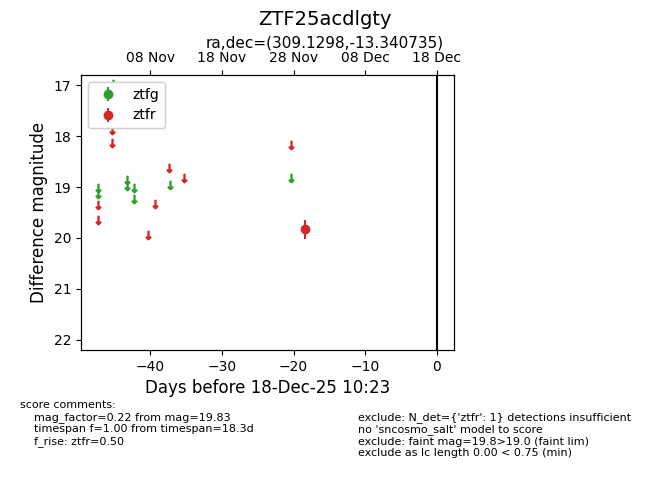
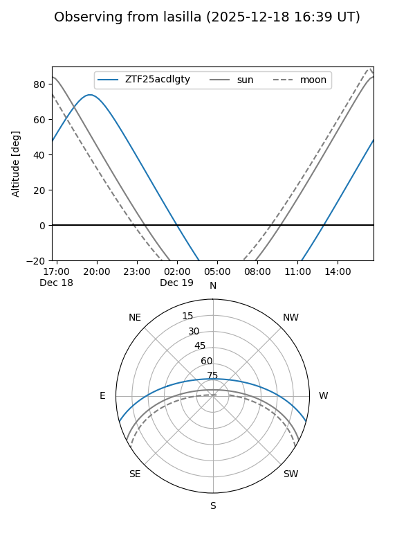
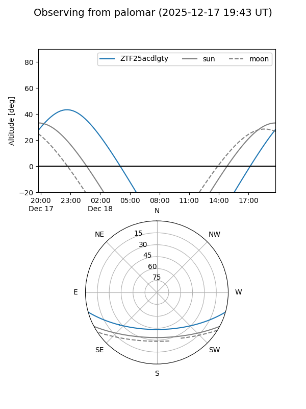

ZTF25acdlgty
Target ZTF25acdlgty at 2025-12-18 11:17
Aliases and brokers:
FINK: fink-portal.org/ZTF25acdlgty
Lasair: lasair-ztf.lsst.ac.uk/objects/ZTF25acdlgty
ALeRCE: alerce.online/object/ZTF25acdlgty
alt names
ZTF25acdlgty (ztf,fink_ztf)
Coordinates:
equatorial (ra, dec) = 309.1298,-13.34074
equatorial (HMS+DMS) = 20:36:31.14,-13:20:26.65
galactic (l, b) = (32.3421,-29.24197)
Photometry
last ztfr=19.83
1 ztfr detections
Lightcurve

Visibility


Additional plots